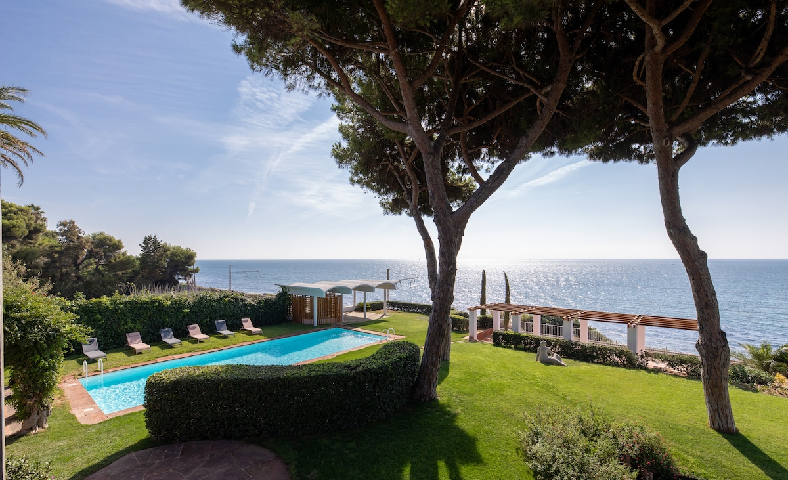

Barcelona
Thirty years, one weekend, one very long table — in a house on the Maresme coast with the sea at the bottom of the garden.
Arrivals board
Qui arriba quan
Everyone lands across Thursday and Friday. Find your line, note your transfer code. It tells you who you are travelling over with.
Transfer groups
Els trasllats
The code on your line reads D for the day you land and G for the group: D1G1 comes in on Thursday, D2G1 and D2G2 on Friday. SOLO means you are travelling on your own and there is no shared ride waiting — message Stefano when you land.
Villa Can Bagués
El lloc
Not in Barcelona at all. The house sits on the shore at Mataró, thirty-five kilometres up the Maresme coast — umbrella pines, a pool, and a gate straight onto the N-II.

Schematic, not to scale. The R1 hugs the shore the whole way — the same route that opened in 1848 as Spain's first railway, Barcelona to Mataró. It still runs between the villa's garden and the beach.
The plan
El pla
The shape of the weekend. Times marked TBC are still moving — the days and the anchors are not.